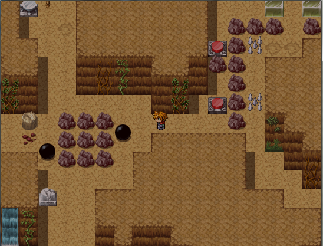

The Shadow Mountain
I made this game with RPG Maker VX in 2013. The spelling, plot, and puzzle
elements are better than those found in The Garden, but you can still tell it was made
by a high school student. I experimented with a different form of in-game combat, which did
not turn out well. Actually, this illustrates why knowing how to code is
important; programs like RPG Maker are limited in their scope. If I had known
Java in 2013, I could have designed the combat system how I wanted to, instead of
having to design it to fit RPG Maker. I digress; the link is below:
The Shadow Mountain (Windows Executable)
Screenshots:


The Shadow Mountain (Windows Executable)
Screenshots:
